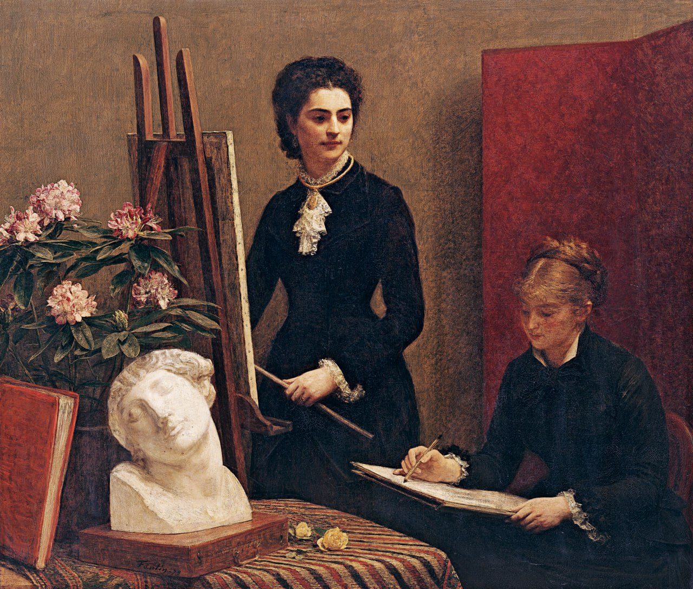

Иньяс-Анри-Жан-Теодор Фантен-Латур
La leçon de dessin dans l'atelier (Урок рисования в мастерской), 1879

📄 Холст 🖌 масло 📏 145 x 170 см
🏛 Королевский музей изящных искусств, Брюссель
Приобретено на трёхгодичной выставке изящных искусств, Гент, 1899 г.